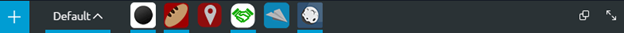

- A line under the icon represents a listing that is visible on the screen.
- Icons that do not have lines under them are minimized.
Use the lower toolbar to add listings to a dashboard, switch dashboards and manage open listings.

The following table explains elements on the lower toolbar.
| Action | Description |
|
Opens a window that lists all the listings you bookmarked to HUD |
| Opens access to your dashboards. From here you can switch dashboards; and create, edit or delete them. | |
Small icons that identify listings that are open on the dashboard.
|
|
| On desktop dashboards, the square icon moves all listings into a cascading window format. | |
| The arrows icon makes the Webtop full-screen (hiding both toolbars) or switches from full-screen mode back to standard view (displaying the toolbars). |